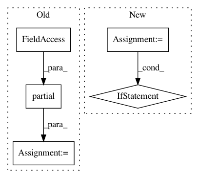

0b686a33355044ffd8957f28a856674c9f00116e,perfkitbenchmarker/data/large_scale_boot/listener_server.py,,,#,134
Before Change
args=(results_file_path, timing_queue,))
// The start the server to listen and put results on queue.
handler = functools.partial(
RequestHandler, process_pool, hostname, timing_queue, clients_port)
listener = server.HTTPServer(server_address, handler)
logging.info("Starting httpserver...\n")
try:
listener.serve_forever()
except KeyboardInterrupt:
After Change
server_address = ("", int(sys.argv[1]))
results_file_path = sys.argv[2]
clients_port = sys.argv[3]
use_listening_server = sys.argv[4] == "True"
vms_name_constructor = functools.partial(sys.argv[5].replace, "VM_ID")
num_vms = int(sys.argv[6])
hostname = socket.gethostname()
process_pool = multiprocessing.Pool()
multiprocessing_manager = multiprocessing.Manager()
timing_queue = multiprocessing_manager.Queue()
// Start the worker to move results from queue to file first.
process_pool.apply_async(WriteResultsToFile,
args=(results_file_path, timing_queue,))
if use_listening_server:
ActAsServer(process_pool, timing_queue, clients_port, hostname,
server_address)
// The start the server to listen and put results on queue.
else:
ActAsClient(process_pool, timing_queue, clients_port,
vms_name_constructor, num_vms)
In pattern: SUPERPATTERN
Frequency: 4
Non-data size: 5
Instances
Project Name: GoogleCloudPlatform/PerfKitBenchmarker
Commit Name: 0b686a33355044ffd8957f28a856674c9f00116e
Time: 2020-04-07
Author: ruwa@google.com
File Name: perfkitbenchmarker/data/large_scale_boot/listener_server.py
Class Name:
Method Name:
Project Name: datascienceinc/Skater
Commit Name: e190a16969e8754f0d3edc42dd746aa9259fdbb6
Time: 2017-04-06
Author: aikramer2@gmail.com
File Name: pyinterpret/core/global_interpretation/partial_dependence.py
Class Name: PartialDependence
Method Name: partial_dependence
Project Name: pantsbuild/pants
Commit Name: 427bd0f33076c2595dceb0dfd5bca00a06f95498
Time: 2014-07-10
Author: john.sirois@gmail.com
File Name: src/python/pants/backend/jvm/tasks/jar_create.py
Class Name: JarCreate
Method Name: execute
Project Name: home-assistant/home-assistant
Commit Name: 95b98f67527bfcadc61d92910648c7fbd9c22746
Time: 2016-08-26
Author: pascal.vizeli@syshack.ch
File Name: homeassistant/components/homematic.py
Class Name:
Method Name: setup